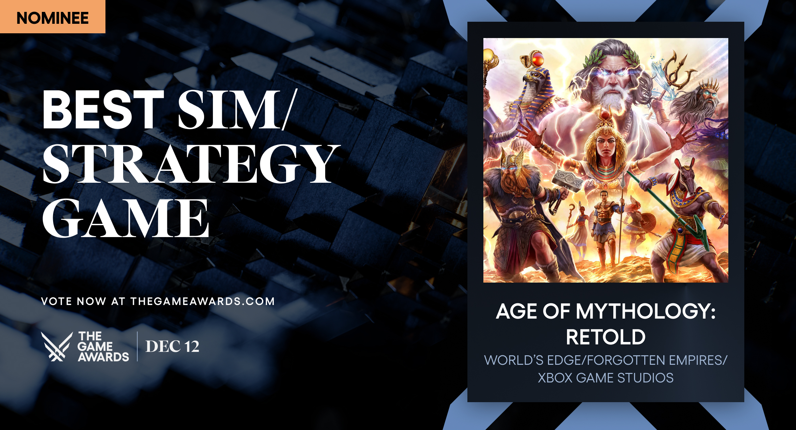

Par les créateurs à l'origine de la franchise acclamée Age of Empires, Age of Mythology: Retold explore un âge mythique où les dieux, les monstres et les humains se livrent une lutte sans merci. En combinant les meilleurs éléments du célèbre jeu Age of Mythology avec un design et des visuels de jeux de stratégie en temps réel modernes, Retold offre une expérience épique et innovante tant pour les vétérans que pour les nouveaux joueurs. Protégez votre domaine, commandez des monstres légendaires et invoquez le pouvoir des dieux pour écraser vos ennemis.
